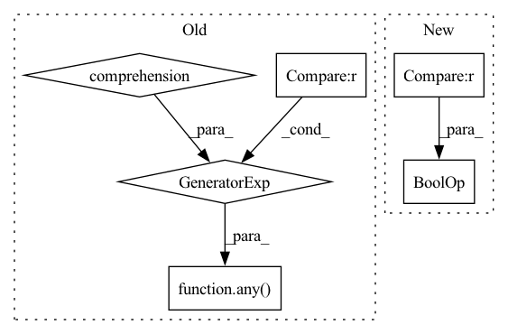

Pattern ID :22678
Before Change
filepath
for filepath in glob_iter
if filepath.name not in data_files_ignore
and not any(part .startswith((".", "__")) and set(part) != {"."} for part in filepath.parts)
] // ignore .ipynb and __pycache__, but keep /../
if allowed_extensions is not None:
out = [
filepathAfter Change
matched_paths = [
filepath
for filepath in glob_iter
if (filepath.name not in FILES_TO_IGNORE or PurePath(pattern).name == filepath.name)
and not _is_inside_unrequested_special_dir(
os.path.relpath(filepath, base_path), os.path.relpath(pattern, base_path)
)
and not _is_unrequested_hidden_file_or_is_inside_unrequested_hidden_dir(
os.path.relpath(filepath, base_path), os.path.relpath(pattern, base_path)
)
] // ignore .ipynb and __pycache__, but keep /../
if allowed_extensions is not None:
out = [
filepathIn pattern: SUPERPATTERN
Frequency: 4
Non-data size: 6
Instances Fragment ID: 71767763
Project Name: huggingface/datasets
Commit Name: 0e1c629cfb9f9ba124537ba294a0ec451584da5f
Time: 2022-06-30
Author: mariosasko777@gmail.com
File Name: src/datasets/data_files.py
M Class Name: AnonimousClass
N Class Name: AnonimousClass
M Method Name: _resolve_single_pattern_in_dataset_repository(4)
N Method Name: _resolve_single_pattern_in_dataset_repository(4)
M Parent Class:
N Parent Class:
M File Name: src/datasets/data_files.py
N File Name: src/datasets/data_files.py
M Start Line: 332
M End Line: 341
N Start Line: 442
N End Line: 455
Before Change
for x in sorted(augmentations, key=lambda z: (z[1], -z[2])):
tags, start, end = x
if any(other_start < start < other_end < end for _, other_start, other_end in current_stack) :
// tree structure is not satisfied!
logging.warning(f"Tree structure is not satisfied! {current_stack}")
continueAfter Change
logging.warning(f"Tree structure is not satisfied! Dropping annotation {x}")
continue
while current_stack[-1] >= 0 and \
not (augmentations[current_stack[-1]][1] <= start <= end <= augmentations[current_stack[-1]][2]) :
current_stack.pop()
// add as a child of its father Fragment ID: 71767762
Project Name: amazon-research/tanl
Commit Name: 2394bc98c9050883fdced2bacd1f5b0f57f3ad1b
Time: 2021-06-04
Author: paoling@amazon.com
File Name: utils.py
M Class Name: AnonimousClass
N Class Name: AnonimousClass
M Method Name: augment_sentence(6)
N Method Name: augment_sentence(6)
M Parent Class:
N Parent Class:
M File Name: utils.py
N File Name: utils.py
M Start Line: 99
M End Line: 124
N Start Line: 99
N End Line: 128
Before Change
return {"Max Drift Score": np.max(drift_values)}
elif self.aggregation_method == "weighted":
feature_importance = [col["Importance"] for col in check_result.value.values()]
if any(importance is None for importance in feature_importance) :
get_logger().warning(
"Failed to calculate feature importance to all features, using uniform mean instead.")
return {"Mean Drift Score": np.mean(drift_values)}After Change
return {"Max Drift Score": np.max(drift_values)}
feature_importance = [col["Importance"] for col in check_result.value.values()]
if self.aggregation_method in ["weighted", "l2_weighted"] and None in feature_importance :
get_logger().warning(
"Failed to calculate feature importance to all features, using uniform mean instead.")
return {"Mean Drift Score": np.mean(drift_values)} Fragment ID: 71767760
Project Name: deepchecks/deepchecks
Commit Name: 5db318781a10db5f122b0949f2f6d5283ff5cbf6
Time: 2022-08-16
Author: 67195469+Nadav-Barak@users.noreply.github.com
File Name: deepchecks/tabular/checks/train_test_validation/train_test_feature_drift.py
M Class Name: TrainTestFeatureDrift
N Class Name: TrainTestFeatureDrift
M Method Name: reduce_output(2)
N Method Name: reduce_output(2)
M Parent Class: TrainTestCheck,ReduceMixin
N Parent Class: TrainTestCheck,ReduceMixin
M File Name: deepchecks/tabular/checks/train_test_validation/train_test_feature_drift.py
N File Name: deepchecks/tabular/checks/train_test_validation/train_test_feature_drift.py
M Start Line: 255
M End Line: 266
N Start Line: 254
N End Line: 276
Before Change
Path(filepath).resolve()
for filepath in glob_iter
if filepath.name not in data_files_ignore
and not any(part .startswith((".", "__")) and set(part) != {"."} for part in filepath.parts)
] // ignore .ipynb and __pycache__, but keep /../
if allowed_extensions is not None:
out = [
filepathAfter Change
matched_paths = [
Path(filepath).resolve()
for filepath in glob_iter
if (filepath.name not in FILES_TO_IGNORE or PurePath(pattern).name == filepath.name)
and not _is_inside_unrequested_special_dir(
os.path.relpath(filepath, base_path), os.path.relpath(pattern, base_path)
)
and not _is_unrequested_hidden_file_or_is_inside_unrequested_hidden_dir(
os.path.relpath(filepath, base_path), os.path.relpath(pattern, base_path)
)
] // ignore .ipynb and __pycache__, but keep /../
if allowed_extensions is not None:
out = [
filepath Fragment ID: 71767768
Project Name: huggingface/datasets
Commit Name: 0e1c629cfb9f9ba124537ba294a0ec451584da5f
Time: 2022-06-30
Author: mariosasko777@gmail.com
File Name: src/datasets/data_files.py
M Class Name: AnonimousClass
N Class Name: AnonimousClass
M Method Name: _resolve_single_pattern_locally(3)
N Method Name: _resolve_single_pattern_locally(3)
M Parent Class:
N Parent Class:
M File Name: src/datasets/data_files.py
N File Name: src/datasets/data_files.py
M Start Line: 136
M End Line: 144
N Start Line: 231
N End Line: 246